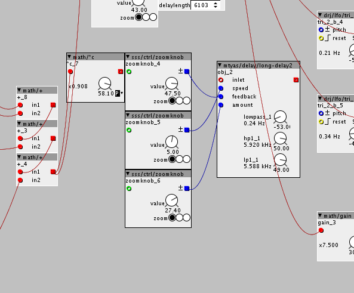

Plug and play patches for Korg Nanokontrol 2.
Korg Nanokontrol 2 plug and play patches
Hi!
I have created this topic to upload some patches to plug and play along with Korg Nanokontrol 2 that I'm working.
This first patch is an stereo 8 oscillator vintage 50's electroacoustic music style synth, with independent volume, change of waveform, modulation and various delays and filters for each channel.
Everything is explained on the patch.
8 osc mod nanokontrol ok.axp (46.8 KB)
Here's a demo on youtube.
https://youtu.be/cCN3sETRsYA
Contributions are welcome!
Here a Drum Machine for Nanokontrol 2.
With 4 voices, 808 sounds, step sequencer with leds, independent volume for each voice, four patterns to save/load, and control for start and end of sequence.
I'm doing one with 8 voices for the future.
Enjoy!
Nanokontrol Drum machine2.axp (112.9 KB)
Stand alone axoloti drum machine controller
Of course! That's the idea.
You have to set the leds to external from the Korg editor, without that it doesn't gonna work.
TangoTits
#6
Hi,
I've been trying to load the first patch, but i'm getting some errors.
{kind=link}
Any idea what's wrong?
First week i have my axoloti so i might overlook some stuff. The drum patch works great, thanks for that one!
trimardius
#8
Hi, I just checked your patch "8 osc nanokontrol" with my new NanoKontrol2.
To make it work delete/connect these (2 times) set of objects:

Thanks for sharing the patch!
trimardius
#10
sure, here it is.
I switched the subpatch to rbrt's sequencer objects.
Now it has 8 voices. (8th voice is bd as first, should be changed)
Added some other small things. Didn't fully check yet if it works correctly though..
Have fun!
Nanokontrol Drum machine2_rbrtseq.axp (54.0 KB)
Thanks @trimardius!
I made what I wish made at that moment. Here's the patch and a little manual.
The swing doesn't work well yet.
Nanokontrol Drum machine2_rbrtseq v1.2.axp (110.2 KB)
{kind=link}
Another one-
FM drum.
3 voices with parameters (vol, pan, pitch, Fm mod, attack, decay) + 3 voice sequencer (play, stop, tempo).
Trigger for every voice.
Nanokontrol2FMdrumseq.axp (93.9 KB)
{kind=link}